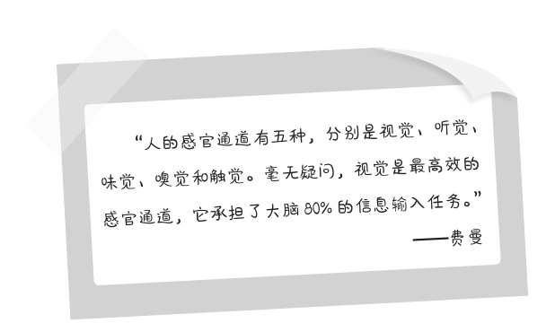
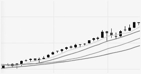

第八章
形成一张思维和流程导图
将知识系统化的一个重要步骤，是要通过读书笔记以及思维导图等形式对学到的和即将学习的内容进行加深和巩固。我们要做的不仅是画一张思维导图，还是一个清晰的流程说明，整个过程是可视化的。
想一想，你在学习或向别人传授知识时有没有遇到过下述问题？
为什么我讲了很多遍，我的学生/对方还是听不懂？
为什么我花了很多时间，仍然掌握不了这门知识？
为什么我查了那么多资料，依旧理解不了这个概念？
怎样才能帮助我更高效地学习知识？
如何才能帮助我更有效地传达自己的知识？
毫不夸张地说，几乎每天都有人向我表达类似的困惑。不管是在家里自己的阅读，还是在学校正式的学习场合，我总能看到一群在“教”与“学”之间挣扎的人。对学习者，要掌握的知识太多，对教学者，要传达的知识量也过于庞杂。这时候，你需要采取思维导图的形式加快理解，帮助自己将知识以一种简洁的结构系统化，从而提高学习的效率。
横向拓展：让知识“可视化”
思维导图的最大作用是可以让我们对知识进行横向的拓展，把不同的点以列表、图像、分支的形式展现在一张纸上，让知识的主要节点一目了然。通过视觉表征的方式，刺激大脑的图像化思考，如同在城市中拥有了一种“直升机视野”，看到知识的关键部分。
当知识可视化时，我们能以较低的成本高效学习。因为学习在本质上是大脑对信息进行加工的过程，想提高效率，第一时间了解到最重要的内容，抓住知识的重点，提高大脑对知识的感知速度和效能就显得尤为重要。
我们对外界环境的感知主要是通过不同的感官实现，眼睛是获取知识最主要的一条通道。为知识画一张思维导图的最主要目的，就是扩大眼睛的作用，让知识变得立体化，使它的整体结构通过眼睛传输到大脑，可以节省很多不必要的精力。

那么，为何人们在学习和工作中还会本能地排斥思维导图的形式呢？有人觉得画一张图太过麻烦，要准备纸，准备笔，还要启动大脑进行深入思考，分析知识的结构，标注知识的要点。这让他觉得有难度。问题是，学习从来都不是一件轻松的事情。你不可能像喝咖啡一样随随便便就能掌握一本书，或者不费吹灰之力就记住一门语言，并在与外国人的交流中自如地使用它。如果你不想认真对待，这一目标是不可能实现的。
思维导图的第一个作用，是把我们的注意力指向实质与最关键的信息，加深我们对于知识的印象。这不仅有利于把握本质，也有助于记忆。比如，你可以先对自己要读的一本书画一张概念图，把主题、用途等要素图形化，突出这本书的理论和观点；再画一张结构图，揭示目录、大章以及概念之间的关系，把书的不同板块分类，形成一个简明的层次结构，有利于针对性的阅读；还可以画一张因果图，列出书中的观点的前因后果，论据与推理逻辑之间的关系，这能为你提供一个独立思考的窗口。你可以站在自己的角度思考书中的观点是否经得起推敲，是否还需要寻找更多的论据来支撑他的观点。这就让我们的学习拥有了一种富有广度和深度的宏观视野。
知识场景的可视化
通过特定的图像化的方式，我们对知识产生了强烈的“画面感”，很容易感同身受，迅速融入这个知识的场景中，在与场景的互动中，记住那些关键的要素。很典型的一个例子是英语角，人们凑到一起，全程用英语沟通，创造了一个深厚的集体氛围。这种方式无论是对记住单个的单词还是练就流利的口语，都能发挥积极的作用。有位同学在学习古诗词时，特意配上了一些诗情画意的视频和图片，这也是将知识场景可视化的好方法。
知识关系的可视化
如果我们不理解不同知识之间的关系，就无法理解知识本身。把知识关系可视化，能助你揭示不同的信息、知识点之间的关联性——它们的不同来源，互相的因果和比证关系——在碎片化的知识中建立联系，形成完整的系统，最终站在整体的角度理解和掌握知识。像概念导图、要点图示和要素展示图等，都是有效的展示知识关系的可视化方式。
学习过程的可视化
这是费曼格外推崇的方法，他建议人们采用动图、视频等方法了解知识的原理，尤其在物理学的教授中，他鼓励学生观察一项物理原理实现的视频过程。比如火箭发动机的燃烧推力的产生，弹子锁的工作原理。如果只是用语言描述和阅读文字，你听到和看到的是枯燥无味的文字组合，夹杂着一堆晦涩难懂的学术用语，你要反复背诵和琢磨才能理解。但如果用视频呢？你可以看到整个过程，几秒钟的时间便恍然大悟，懂得了相关的知识。
画出一个“学习流程”
为了吃透一本书，我经常先给自己准备一个简易流程。做法是，拿出一张纸，画一个简单清晰的步骤图。第一步做什么（目的和方法），第二步做什么（目的和方法），以此类推，一般不超过五步。每完成一步，在后面打一个“√”。
这表明了思维导图在学习中的第二个作用，它提供的价值远不止于宏观角度对知识的理解，还深度参与了我们在学习时的“认知加工”的过程，可以帮助你在理解知识时更轻松与可控。轻松在于节省思考的精力，纸上展示了知识的框架和主要知识点；可控在于能把握学习的时间，知道当下自己处于哪个环节，何时能达到目的。
第一步：短时记忆
我拿起手中的一本书，是著名投资家戴纳西姆·尼古拉斯·塔勒布（Nassim Nicholas Taleb）写的《随机漫步的傻瓜》（Fooled by Randomness），书的副题是：发现市场和人生中的隐藏机遇。不妨想一想，费曼将如何阅读和学习这本书？在费曼学习法中，理解知识的第一步是构建一个系统。可以是主题系统，也可以是分析系统。我选择了建设一个主题系统：
1.成功的投资家讲述如何投资；
2.与市场主流意见不同的观点；
3.警惕随时出现的黑天鹅现象；
4.从随机变化的市场中发现隐藏的机遇。
这些主题汇总出来，在大脑中形成一个短时记忆。当我将它们存储进大脑时，也产生一个聚焦的作用。短时记忆能创造一个焦点，或者说指明一个方向，以便于我们进一步采取行动。即，如何对书的内容进一步学习，让其转换成大脑的“长时记忆”，吸收书中的有益知识，持久地存储在大脑中，并改善我们的现实生活。
第二步：心理表象
构建知识的心理表象，我们需要对知识进行视觉表达。通俗地说，心理表象是指知识以形象化的方式在我们的大脑中形成的抽象概念。它具备两个特点：第一，精练的语言表述，文字易于理解；第二，文字表述可以图像化。对于学习者而言，不熟悉的知识特别是抽象型的知识仅用文字表述会让人理解起来备感艰难。人很难想象那些超出自己阅历和经验的事物，比如你对地球上的空间很熟悉，却无法理解黑洞里面的空间规则。但当采用形象化的方式描述，通过视觉表达出来时，事情就变得简单多了。
例如塔勒布在书中的观点：股票的价格遵循的是随机漫步的涨跌规律，一切都是市场在自己主宰，人对价格的预测大部分只能靠运气。只看这段文字，我可能记不住三天，因为关于投资的理论实在太多了，也许第二天就有别的理论吸引我，覆盖了这段记忆，使我没有强烈的兴趣继续读下去。
我便在纸上画了两幅图。一幅代表了市场的主流声音（他们认为趋势是可以预测的）。如下图所示：

另一幅是塔勒布的观点，他认为趋势无法预测，尤其公认的上涨趋势会随时崩盘。如下图所示：
当我用这两幅图进行对比时，我发现塔勒布的观点是正确的，这坚定了我继续阅读和学习的决心，直到耐心地读完他的书，并真正理解他的思想。一旦知识在大脑中构建了心理表象，我们便能产生深刻的、难以磨灭的印象。
再比如我们在化学课都会学到的水分子（H2O）的形态、运动和变化，水分子在书本上的文字形象是H2O——氢二氧一，无数的化学分子式均是这种类似的组合，记起来非常枯燥。现在，我们可以在纸上画一个水分子的模型：氧是一个蓝色的大分子，氢是两个绿色的小分子，它们结合在一起就像一颗脑袋带着两只大耳朵。闭上眼睛想象一下，是不是感到形象饱满，易于记忆？
图像化的记忆有利于在大脑中植入心理表象，这比纯粹记住一段文字要有效生动。在理解不同的知识时，用这种方式都能起到很好的作用，加深我们对知识的印象。
第三步：双重编码
在认知心理学中有一个“双重编码”理论，该理论认为，人的大脑中存在两种功能独立却又相互联系的信息加工系统：一种以文字语言为基础，另一种以表象语言为基础。前一种是语言意义，后一种是图像意义，对信息同时进行两种加工，等于实施了双重编码，记忆更加牢固，理解也更为深刻。
因此，在第二步的基础上，我们需要把文字形象和图片（视频）形象结合起来理解所学的知识。经过双重编码的知识在大脑中会被优先存储，然后转变为持久的长时记忆。这就是为什么我们去网站看视频学习历史知识要比在课堂翻阅历史书效果更好的原因。图像传达的信息成倍地放大了文字的效果，大脑喜欢这种学习方式。
第四步：长时记忆
我们想要学习的所有知识，最后都要在大脑中转化为“长时记忆”才算成功。因此无论采取任何学习方法，都要同时激活这两个系统为大脑服务，对信息同步编码。只有双重编码顺利地成功后，信息才会被大脑转移到长时记忆。此时，我们便完成了对于知识的理解。
我在课堂之上和课堂之外的很多场合向人们推荐知识可视化的学习方式。在费曼学习法中，它对我们迅速而深刻地理解所学的知识有着莫大的功效。不仅利于“学”（输入），也有助于“教”（输出）。
除此之外，制定思维和流程导图的还有一个重要的原因，那就是文字语言的表达天然具有碎片化的特征。如果你按部就班地阅读文字知识，就需要劳烦大脑把碎片化的知识拼接起来。这很不容易，你会激怒大脑，它讨厌这种学习。为什么一本书读了三分之一你就扔到一边不再感兴趣了？不是你不想学习书里的知识，是大脑在说“不”。这是由文字语言的表达与视觉语言的表达之间的差异决定的。视觉语言往往具有整体性的特点，它在一个完整的逻辑之上被组合起来，大脑不需额外做些什么，就能理解和存储这些知识。
例如，有一个知识——它可能需要20句话、300字左右才能表述清楚，对大脑而言，每一句都是一个碎片信息，无法映射整体。我们的大脑要将20句碎片信息整合到一块才能真正从整体上理解它。但是视频或图片呢？几秒钟或者一幅图就可以了，通过眼睛的处理，所有的信息在上面一览无余，而且是已经被解构并重新组织好的精彩的内容，大脑一边接收视觉信号，一边已经从整体的角度理解这些知识。
所以，文字语言“碎片化”的特点决定了它不利于高效能地学习，起码在理解的环节为我们设置了足以让人望而生畏的障碍。与之相比，视觉化的表达则具备强烈的“整体性”的特征，尤其善于表达知识之间的关系，使大脑能够更好地把复杂的信息迅速地加工和记忆。你的理解和记忆速度有多快，学习知识的效果就有多好。
总体而言，费曼在自己的教学工作中推荐的“思维和流程导图”有助于我们解决以下的五个问题：
快速地获取自己需要的信息——不论一本书，一门学科，还是一种技能，速度可以得到保证。
掌握理解和分析知识的方法——和文字语言比起来，思维导图的形式为大脑创造了一条视觉化的路径。除了读书外，我们要借鉴图片、视频等工具输入内容。
建立自己思考问题的框架——思维导图从整体和宏观的角度重新组织了知识，为我们提供了一个系统化思考问题的架构。
形成高质量的学习笔记——组织和绘制思维导图的同时，我们也会完成高质量的学习笔记。
为知识的输出做好准备——思维导图是以教代学的一个必要工具，如果你不能为所学的知识画出一个整体框架，就无法向别人输出知识。